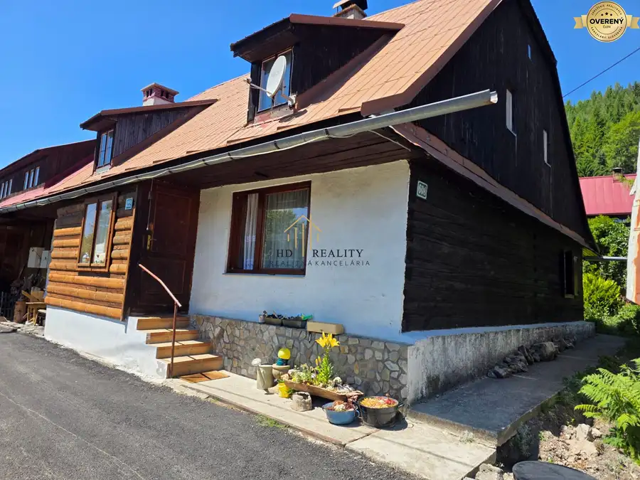
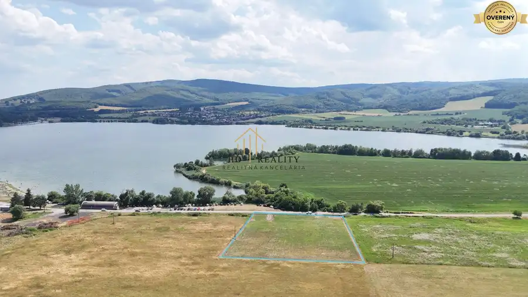

Predaj rodinného domu v Medzibrode
Medzibrod
- Dispozícia6-izbový
- Plocha260 m²
- Poschodie0. z 1
- Stavpo rekonštrukcii
O nehnuteľnosti
HD REALITY v zastúpení Ing. Hana Dubovskej Vám ponúka na
predaj rodinný dom j v Medzibrode
na komfortné bývanie pre jednu aj dve rodiny. Nehnuteľnosť je po
kompletnej rekonštrukcii
, má priestrannú dispozíciu, veľký rovinatý pozemok s výmerou
623 m²
, zastrešenú terasu
20 m²
, pivnicu a možnosť vytvorenia ďalšej bytovej jednotky.
Dom je ideálny pre
rodinu s deťmi, viacgeneračné bývanie, dve rodiny, alebo ako investičná nehnuteľnosť na prenájom.
DISPOZÍCIA RODINNÉHO DOMU
Na prízemí rodinného domu sa nachádza vstupná hala s dreveným schodiskom, veľká kuchyňa prepojená s obývacou izbou. Dominantou obývacej časti je krb, ktorý vytvára príjemnú atmosféru a zároveň ponúka alternatívny zdroj tepla. Na tomto podlaží sa ďalej nachádza izba-spálňa, praktická špajza, kúpeľňa so sprchovacím kútom a samostatné WC.
Z prízemia je vstup na veľkú
zastrešenú terasu s výmerou 20 m²,
ktorá je ideálna na rodinné posedenia, grilovanie, oddych alebo príjemné letné večery . Z terasy viete vyjsť priamo do záhrady.
Prvé poschodie ponúka veľkorysý otvorený priestor vhodný na vytvorenie
obývacej izby spojenej s kuchyňou.
Ďalej sa tu nachádza kúpeľňa s vaňou a WC a dve samostatné izby.
Dispozícia domu umožňuje veľmi praktické oddelenie jednotlivých podlaží, preto je nehnuteľnosť vhodná aj pre dve rodiny alebo
viacgeneračné bývanie
.
PODPIVNIČENIE A MOŽNOSŤ ĎAĽŠIEHO BYTU
Veľkou výhodou je podpivničenie domu, ktoré poskytuje dostatok úložného a technického priestoru. Zároveň ponúka možnosť vybudovania samostatného bytu, čím vzniká ďalší potenciál na využitie nehnuteľnosti – napríklad pre dospelé
dieťa,
rodičov, hostí alebo na prenájom.
TECHNICKÝ STAV A NÁKLADY
Rodinný dom je po kompletnej rekonštrukcii, čo umožňuje novému majiteľovi nasťahovať sa bez potreby rozsiahlych stavebných úprav.
Kúrenie zabezpečuje nový plynový kotol. Príjemnú atmosféru a možnosť prikurovania ponúka krb v obývacej izbe. Nehnuteľnosť je napojená na obecný vodovod.
Veľkým benefitom sú nízke mesačné náklady na bývanie, ktoré predstavujú približne
170€
mesačne vrátane elektriny, plynu a vody
POZEMOK - 623 m²
Rodinný dom
sa nachádza na rovinatom pozemku s výmerou
623
m².
Záhrada
ponúka dostatok priestoru na relax, pestovanie zeleniny, záhradkárčenie alebo vytvorenie detského ihriska či oddychovej zóny.
Na pozemku sa nachádzajú ovocné stromy a praktický
prístrešok
na autá, ktorý zabezpečuje pohodlné parkovanie.
HLAVNÉ VÝHODY
- kompletná rekonštrukcia
- vhodný pre dve rodiny
- možnosť vytvorenia samostatného bytu
- podpivničenie
- nový plynový kotol
- nízke mesačné náklady približne
170
€ vrátane elektriny, plynu a vody
- zastrešená terasa
20
m²
- rovinatý pozemok
623
m² so záhradou s ovocnými stromami
- prístrešok na auto
- praktická dispozícia s možnosťou oddelenia jednotlivých podlaží
NÁZOR MAKLÉRA
Z pohľadu makléra hodnotím túto nehnuteľnosť ako veľmi zaujímavú príležitosť pre klientov, ktorí hľadajú priestranný rodinný dom s možnosťou viacgeneračného bývania. Jej najväčšou výhodou je variabilná dispozícia, ktorá umožňuje pohodlné bývanie jednej rodiny, ale zároveň aj oddelenie jednotlivých podlaží pre dve rodiny.
Za ďalšiu významnú výhodu tejto nehnuteľnosti považujem veľmi dobrú dostupnosť do
Banskej Bystrice.
Medzibrod sa nachádza približne 18–20 km od centra Banskej Bystrice, pričom cesta autom trvá približne 17–18 minút.
Ponúka príjemnú kombináciu pokojného bývania v obci obklopenej prírodou a zároveň pohodlnej dostupnosti mesta. Pre rodiny, ktoré potrebujú každodenný prístup do Banskej Bystrice za prácou, školou, nákupmi či službami, je táto poloha veľmi praktická. Výhodou je aj
železničné spojenie
medzi Medzibrodom a Banskou Bystricou, takže obyvatelia majú k dispozícii aj alternatívu k individuálnej doprave.
Z pohľadu makléra ide preto o veľmi zaujímavú kombináciu – priestranný a zrekonštruovaný rodinný dom, možnosť bývania dvoch rodín,
veľký rovinatý pozemok,
nízke mesačné náklady a zároveň výborná dostupnosť do Banskej Bystrice.
Parametre
| Rozloha pozemku | 623 m² |
|---|---|
| Zastavaná plocha | 186 m² |
| Celková rozloha | 623 m² |
| Úžitková plocha | 260 m² |
| Poschodie | prízemie |
| Počet poschodí | 1 |
| Počet izieb | 6 |
| Stav | po rekonštrukcii |
| Voda | verejný vodovod |
| El. napätie | 230V |
| Plyn | áno |
| Kanalizácia | áno |
| Internet | wifi |
| Kúpeľňa | áno |
| Vykurovanie | vlastné - plyn |
| Balkón | áno |
| Terasa | áno |
| Pivnica | áno |
| Parkovanie | vonkajšie |
| Postavené z | tehla |
| Zateplený objekt | áno |
| Strecha | po rekonštrukcii |
| Káblová televízia | áno |
| Energetický certifikát | nie |
| Okná | plastové |
| Terén | rovina |
| Prístupová cesta | asfaltová cesta |
| Dátum zverejnenia | 21. 8. 2026 |
Kde to je
Mohlo by Vás zaujímať

Rodinné domy10 89 900 €Predaj rodinného domu, Hanesy, Banská Bystrica Donovaly 4-izbový120 m² Na predaj v exkluzívnom zastúpení ponúkame útulnú a kompletne zrekonštruovanú trojizbovú drevenicu v jednej z najžiadanejších lokalít Donovál, v…
Pozemok10 165 000 €Predaj investičný pozemok na Ružinej - Divín Divín 8018 m² HD REALITY Vám ponúka na predaj slnečný investičný pozemok v atraktívnej lokalite Ružiná , v blízkosti vodnej nádrže Ružiná. Pozemok s celkovou…